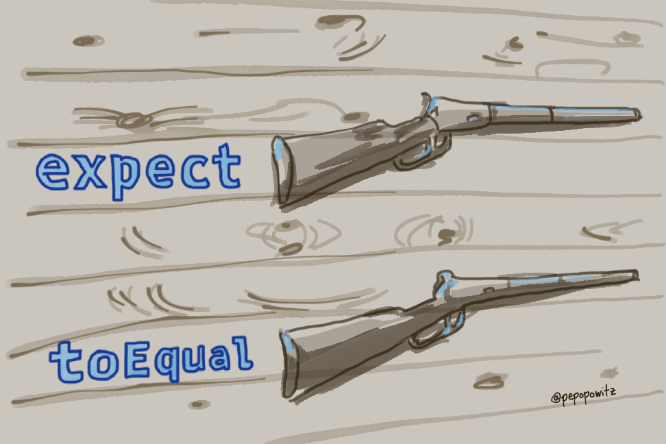

Chekhov's Gun
Anton Chekhov was a Russian playwright who died in 1904. He wrote several hundred stories by the time he was 26, many of them highly regarded. Chekhov is often credited with being a major influence on the modern short story.
One of his most famous contributions is something called Chekhov's Gun. This is a principle in dramatic writing that suggests that all elements in a story must be relevant in some way. If an element doesn't have relevance, it should be removed. Irrelevant elements might distract the audience from the intended story.
The origin of Chekhov's Gun comes from several related quotes from his writings. One example:
Remove everything that has no relevance to the story. If you say in the first chapter that there is a rifle hanging on the wall, in the second or third chapter it absolutely must go off. If it's not going to be fired, it shouldn't be hanging there.
What does this have to do with unit tests?
Aside from a couple of classes in high school, I’ve never studied writing. I don’t remember the first time I heard of Chekhov’s Gun. It resonated with me though, as an analogy of how I feel about writing unit tests — especially when it comes to test setup. If a line of setup code isn’t important to describe a specific test, then I don’t want it to distract me. I’d like to be able to focus on what makes the test unique.
Imagine I have an app where users can submit new beers to a curated list of "the best beers ever." Here's a test that I might write for a function that validates that the user submitted the ABV (alcohol by volume) for a beer. We'll call it Noisy Test.
describe("validateBeer", () => {
it("returns invalid for beers with no abv", () => {
const beer = {
id: 87983,
brewery: {
id: 12332,
name: "Central Waters",
location: "Amherst, WI",
overallRating: 5,
},
name: "Mudpuppy Porter",
beerStyle: "Porter",
abv: undefined,
};
const result = validateBeer(beer);
expect(result).toEqual(false);
});
});
Noisy Test
This test is pretty decent. I like that the name of the test tells me exactly what it is testing. I like that there aren't a ton of assertions, and it's pretty clearly testing only one thing.
What I don't like about it is the distracting setup code. This test verifies that a beer with no ABV is considered invalid. It doesn't specify abv: undefined until the 11th line of the test. This means that I have to read through 10 lines of irrelevant setup code before I get to what actually makes this test unique - the submitted beer doesn't have an ABV. This is a violation of Chekhov's Gun, in unit test form.
What I'd rather see is something like this - we'll call it Better Test:
describe("validateBeer", () => {
it("returns invalid for beers with no abv (less setup)", () => {
const beer = makeMeABeer({
abv: undefined,
});
const result = validateBeer(beer);
expect(result).toEqual(false);
});
});
Better Test
Here, I get a beer from an extracted function named makeMeABeer. This function would generate a typical beer, with values that are usual and not edge-cases. I pass in only the values that are unique to this test - in this case, abv: undefined.
Extracting my setup of a beer, as in the second example, improves my signal to noise ratio for this test. The signal is "what am I trying to test?" The noise, in the first example, is "setup code that doesn't impact this test." The more I can increase the signal, the easier it is for a reader of my test to understand my intentions.
Why do I care about the reader of this test?
A question: who do we write our unit tests for? It's ourselves, right?
If we're doing TDD, yes, we get a lot of value out of the tests we're writing, in the moment.
But aside from TDD, who benefits the most from our tests? It's not you, when you write the test. You've got all the context about the test being written. You most likely understand the code that you are writing. If you'd just finished writing the validateBeer function, and I asked you what the system was supposed to do with a beer that didn't have an ABV, you'd likely be able to tell me the answer - without looking at any tests.
But if a teammate makes a change a few months from now and this test suddenly starts failing, that teammate will have no context. They won't know why this test was written in the first place. They will not know details of how the test was made to pass. They might not even know that ABV is a thing.
Noisy Test, a test that is filled with irrelevant setup code, will distract them from discovering why this test exists. It will take them time to determine what makes this test unique compared to the others. They might have to compare it to several other tests to find the difference.
Better Test, on the other hand, removes the irrelevant setup details. This allows them to determine more quickly what makes this test unique. They might not know immediately why it is failing, but at least they'll know why this test exists, and how it is different.
Optimize for the reader, not the author
Chekhov's Gun is all about optimization of information. Anton Chekhov wants your writing to be as efficient as possible - so that readers can consume it with minimal effort and distraction.
When we're writing code, we are communicating with our teammates as much as we are communicating with the compiler. We are authors, and they are our readers. If we write our code in a way that optimizes for our writing experience, our readers will struggle. It won't take long for them to throw their hands up and say "let's do a rewrite, because I don't understand this."
If we write our code in a way that optimizes for the reading experience, our readers will thank us. With less cognitive load from trying to decipher our code, they'll be able to focus on implementing their changes. Tests that minimize irrelevant setup are one simple way we can help the reader. Optimizing your code for the reader will help you build a more maintainable codebase.